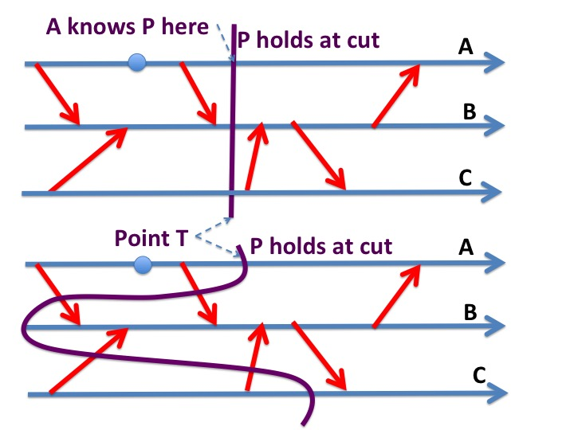

We sometimes invest software
agents with human characteristics. For example, a programmer may
say "an agent knows that another agent is idle." Endowing software with
human capabilities can be dangerous when terms are ambiguous.
In this module we define a predicate "an agent
knows \(P\)" where \(P\) is a predicate on states of a system.
We use this definition to develop algorithms. The definitions and
proofs are based on the concepts of timelines and
consistent
cuts.
This module has several theorems which are obvious from the
definitions of consistent cuts and what agents know.
What an Agent Knows
For an agent \(x\), a state \(r\) of \(x\), and a predicate \(P\),
"agent \(x\) in state \(r\) knows \(P\)"
is a Boolean which holds if and only if:
\(P\) holds when agent \(x\) is in state \(r\) in
all trajectories that start in initial states, i.e.,
We restrict attention to system trajectories that start in initial states.
For an agent \(x\), predicate \(P\), and a point \(T\) in a
trajectory, the phrase
"\(x\) knows \(P\) at \(T\)"
means that at point \(T\), \(x\) is in a state in which \(x\)
knows \(P\).
We use the abbreviation "\(P\) holds at a consistent cut" for
"\(P\) holds at the global state corresponding to a consistent cut"
Example
A system has two agents \(x\) and \(y\) with channels between
them. Initially, the system has a single indivisible, indestructible
tokens that cannot be created. So, the system has a single tokens in
every state in every trajectory.
When \(x\) is in a state in which it holds the token then \(x\)
knows that \(y\) holds no tokens.
When \(x\) is in a state in which it holds no tokens then \(x\) knows
that the token is in a channel or at \(y\).
The following statement is False. "When \(x\) is in a state in which
it holds no tokens, \(x\) knows that \(y\) holds the token."
The statement is False because the token could be in a channel.
Theorem: Knowledge and Consistent Cuts
Let \(P\) be a predicate on the states of a system.
If \(x\) knows \(P\) at a point \(T\) in \(x\)'s timeline
then \(P\) holds in every consistent cut through point
\(T\).
The proof of this statement follows from our earlier proof that there
exists trajectories from initial states to all consistent cuts. And
since \(P\) holds for the entire system given the state of agent \(x\) at point \(T\) on
\(x\)'s timeline, it follows that \(P\) holds for the state at every consistent cut.
Example
>
Fig. 2. Agent A knows P in all consistent cuts that cross
point T
The top figurea in both diagrams above show a time T at which agent A knows
that P holds. This implies that P holds in all consistent cuts through
point T. The lower figures in the diagrams show consistent cuts which
passes point T on A's timeline; the theorem says that P holds for the
state at these cuts too.
Theorem: A Silent Agent retains Knowledge
Let \(x\) be an agent in a system, and let \(P\) be a
predicate on a subsystem that does not include \(x\).
Let \(T\) and \(T'\) be points on \(x\)'s timeline with \(T < T'\). If
\(x\) knows \(P\) at point \(T\) and \(x\) sends no messages in the
interval \([T, T']\) then \(x\) knows \(P\) at \(T'\).
Proof
Let \(c'\) be any consistent cut through point \(T'\) on \(x\)'s
timeline. We will prove that \(P\) holds for the state at cut \(c'\).
Let \(c\) be the
cut that is identical to \(c'\) except that it passes through point \(T\) on
\(x\)'s timeline. \(c\) is consistent because there are no
outgoing edges from \(x\)'s timeline between cuts \(c\) and
\(c'\). Because \(x\) knows \(P\) at \(T\), \(P\) holds at \(c\). Since \(c\) and \(c'\)
are identical except for the intersection with \(x\)'s timeline,
it follows that \(P\) holds \(c'\).
Theorem: Agents who don't listen remain Ignorant
Let \(x\) be an agent in a system, and let \(P\) be a
predicate on a subsystem that does not include \(x\).
Let \(T\) and \(T'\) be points on \(x\)'s timeline with \(T < T'\). If
\(x\) knows \(P\) at point \(T'\) and \(x\) received no messages in the
interval \([T, T']\) then \(x\) knows \(P\) at \(T\).
The proof has exactly the same structure as the proof of the
previous theorem.
Consequence of the Theorem
\(x\) didn't learn anything in the interval \([T, T']\); everything
\(x\) knows at the later point \(T'\) is knowledge it already had at
the earlier point \(T\). The only way for an agent to gain knowledge is
to receive messages. An agent cannot learn about other agents by only
sending messages or making internal state transitions.
Theorem: Knowledge implies Control
Let \(x\) and \(y\) be agents in a system, and let \(P\) be a
predicate on the states of \(y\).
Let \(T\) and \(T'\) be instants in a trajectory with \(T < T'\). If
\(x\) knows \(P\) at \(T\), and \(\neg P\) holds at \(T'\), then there
is a path in the timeline diagram from point \(T\) on \(x\)'s timeline
to point \(T'\) on \(y\)'s timeline.
Proof: If there is no path from point \(T\) on \(x\)'s timeline
to point \(T'\) on \(y\)'s timeline then there exists a consistent cut
which crosses \(x\)'s timeline at \(T\) and
crosses \(y\)'s timeline at \(T'\).
Such a cut is generated by the global-snapshot marker algorithm where
\(x\) is the initiator at point \(T\).
Consequence of the Theorem
Suppose you and your friend communicate only by means of messages
that are delayed by arbitrary (finite) amounts. Consider a situation
where your friend knows
that you are in the library at 9 pm. Then, from our definition of
knowledge, because agents only know truth, you must be in the library
at 9 pm. Moreover, you can't leave the library until
you receive a message from your friend; this message may go through
intermediate agents.
In one of the exercises we'll look at knowledge when agents have
clocks that may drift from each other but are not more than a some
constant \(M\) units apart. If your friend knows that you will be in
the library till her watch reads 9:00 pm, and your watches may drift apart
by a minute, then you can leave the library at 9:01 pm. Clocks are
useful even if they aren't perfect. More about clocks later.
Theorem: Communication to learn about
Change
This theorem is similar to the "knowledge is control" theorem.
Let \(x\) and \(y\) be agents in a system, and let \(P\) be a
predicate on the states of \(y\).
Let \(T\) and \(T'\) be instants in a trajectory with \(T < T'\). If
\(\neg P\) holds at \(T\) and \(x\) knows \(P\) at \(T'\) then there
is a path in the timeline diagram from point \(T\) on \(y\)'s timeline
to point \(T'\) on \(x\)'s timeline.
What Agents Know about Channel States
Next, let's look at systems in which messages are acknowledged.
For a pair of agents \(x, y\), let \(ms\) and \(mr\)
be the number of messages that \(x\) has sent to \(y\), and the number
of messages that \(y\) has received from \(x\), respectively.
Let \(as\) and \(ar\) be
the number of acknowledgements that \(y\) has sent to \(x\), and
the number of acknowledgements that \(x\) has received from \(y\),
respectively.
The following is an invariant:
\(ms \geq mr \geq as \geq ar \)
The number of messages in the channel from \(x\) to \(y\) is \(ms -
mr\).
Because \(ms\) and \(ar\) are variables of agent \(x\),
agent \(x\) knows an upper bound,\(\; ms - ar\), on the number of
messages in channel \((x, y)\).
So, \(x\) knows that the channel is empty when \(\; ms = ar\).
What an agent cannot know
An agent cannot know that there are
exactly \(n\) messages in a channel, for \(n > 0\).
You can prove this result using the concept of consistent
cuts. Intuitively, the agent cannot know whether a message is in the
channel or has been received.
The Predicate \(x\) knows \(P\)
We define a predicate "\(x\) knows \(P\)" as the weakest predicate \(Q\)
that satisfies:
As defined earlier, the predicate \(x\) knows \(P\) holds for a state
\(r\) exactly when \(x\) in state \(r\) knows \(P\).
For example, in a system that passes tokens between agents, the
predicate, "\(x\) knows that \(y\) holds no tokens," holds for those
global states where we can deduce that \(y\) holds no tokens based solely on
\(x\)'s state.
Chains of Knowledge
Let \(x, y, z\) be agents of a system and \(P\) be a predicate on
states of the system. Then the following are all predicates:
\(z\) knows \(P\)
\(y\) knows that \(z\) knows \(P\)
\(x\) knows that \(y\) knows that \(z\) knows \(P\)
The theorems given earlier apply to any predicate. For example, if
\(x\) knows that \(y\) knows that \(z\) knows \(P\) at a point \(t\) in a
trajectory, and \(\neg P\) holds at a later point \(t'\)
then there must be path in the timeline diagram from point \(t\) on
\(x\)'s timeline to point \(t'\) on \(z\)'s timeline.
Concurrent Systems with Shared Variables
The theorems
and proofs given in this module apply to systems with shared
variables, and indeed any system with trajectories that are
representable by timeline diagrams and with consistent cuts.
Summary
Many people working on distributed systems use the phrase "an agent
knows." This module gives a definition of the concept that is
consistent with intuitive definitions of knowledge.
The central idea in this module is the
relationship between what agents know and consistent cuts of
timelines. We presented several theorems about agent knowledge which
are intuitive when applied to human agents. The proofs are
straightforward and are all based on consistent cuts of timelines.